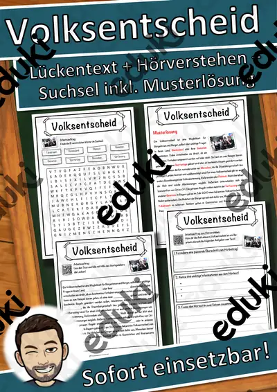

Demokratie und politische Beteiligung: Arbeitsblätter für Klasse 3–10 (Politik/Sozialkunde)
Demokratie lernen beginnt im Klassenrat und reicht bis zu Bundestag und Gewaltenteilung. Politische Bildung gehört in der Sekundarstufe zu den Pflichtbereichen, in der Grundschule gibt es erste Bausteine.
Die Begriffsliste dieser Einheit: Wahlen, Gewaltenteilung, Parlament, Meinungsfreiheit, Bürgermeister und Volksentscheid.
In den Lehrplänen der Länder ist das Thema im Fach Politik/Sozialkunde verankert, meist in den Klassen 3 bis 10. Die Schülerinnen und Schüler erklären, wie Entscheidungen in einer Demokratie zustande kommen.
Im Alltag einer Lehrkraft zählt, dass Material sofort einsatzbereit ist: Die Blätter zu Demokratie und politische Beteiligung greifen Gewaltenteilung, Parlament und Meinungsfreiheit auf, lassen sich ausdrucken und kommen mit Lösungen, damit die Vorbereitung kurz bleibt. Die Prüfungstrainings bereiten gezielt auf Klassenarbeiten und Abschlussprüfungen vor.
Zum Thema finden Sie 10 Materialien, unter anderem Wahlen und Demokratie, Volksentscheid Lückentext mit Wortspeicher und Wahl Lückentext mit Wortspeicher Hörverstehen, verteilt auf 1 Prüfungstraining und 9 Lückentexte mit Hörverstehen in Klasse 5–9. Eine Probewahl zu einer Schulfrage mit Wahlzettel und Urne macht das Verfahren greifbar.
Das gehört zum Thema
Passende Arbeitsblätter und Materialpakete

Wahlen und Demokratie – Prüfungstraining Sozialkunde (Klasse 9)

Volksentscheid Lückentext mit Wortspeicher Hörverstehen und Suchsel

Wahl Lückentext mit Wortspeicher Hörverstehen und Suchsel

Parlament Lückentext mit Wortspeicher Hörverstehen und Suchsel

Gewaltenteilung Lückentext mit Wortspeicher Hörverstehen und Suchsel

Europäisches Parlament Lückentext mit Wortspeicher Hörverstehen und Suchsel

Bürgermeister Lückentext mit Wortspeicher Hörverstehen und Suchsel

Bundestag Lückentext mit Wortspeicher Hörverstehen und Suchsel

Meinungsfreiheit Lückentext mit Wortspeicher Hörverstehen und Suchsel

Demokratie Lückentext mit Wortspeicher Hörverstehen und Suchsel
Häufige Fragen
Für welche Klassenstufe passen die Arbeitsblätter zu Demokratie und politische Beteiligung?
Der Schwerpunkt liegt auf Klasse 6; insgesamt deckt die Auswahl (10 Titel) Klasse 5–9 ab. In der Beschreibung jedes Materials steht die empfohlene Stufe.
Welche Inhalte decken die Materialien zu Demokratie und politische Beteiligung ab?
Inhaltlich reicht die Auswahl von Wahlen über Gewaltenteilung und Parlament bis zu Bürgermeister; Details stehen bei den einzelnen Materialien.
Wie setze ich Demokratie und politische Beteiligung im Unterricht ein?
Eine Probewahl zu einer Schulfrage mit Wahlzettel und Urne macht das Verfahren greifbar. So entsteht aus den Blättern eine kleine Einheit, die sich auf zwei bis drei Stunden verteilen lässt.
Mehr Material nach Fach und Klasse
- Alle Materialien Deutsch
- Arbeitsblätter Deutsch Klasse 3
- Arbeitsblätter Deutsch Klasse 4
- Arbeitsblätter Deutsch Klasse 5
- Arbeitsblätter Deutsch Klasse 6
- Arbeitsblätter Deutsch Klasse 7
- Arbeitsblätter Deutsch Klasse 8
- Arbeitsblätter Deutsch Klasse 9
- Arbeitsblätter Deutsch Klasse 10
- Unterrichtsmaterial Klasse 3
- Unterrichtsmaterial Klasse 4
- Unterrichtsmaterial Klasse 5
- Unterrichtsmaterial Klasse 6
- Unterrichtsmaterial Klasse 7
- Unterrichtsmaterial Klasse 8
- Unterrichtsmaterial Klasse 9
- Unterrichtsmaterial Klasse 10
Verwandte Lehrplanthemen
- Bundespräsident, Kanzler und Regierung (Politik/Sozialkunde, Klasse 5–10)
- Bundestagswahl und Parteien (Politik/Sozialkunde, Klasse 5–10)
- Europäische Union (Politik/Sozialkunde, Klasse 5–10)
- Grundgesetz und Grundrechte (Politik/Sozialkunde, Klasse 5–10)
- Länder Europas (Erdkunde, Klasse 4–8)